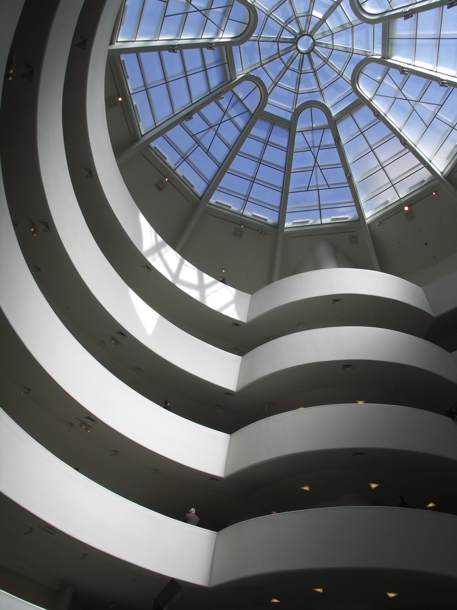
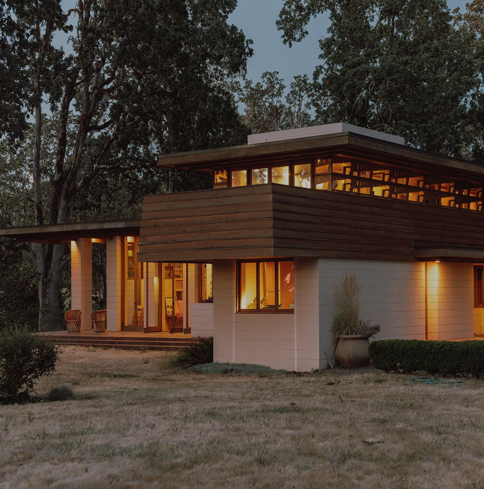
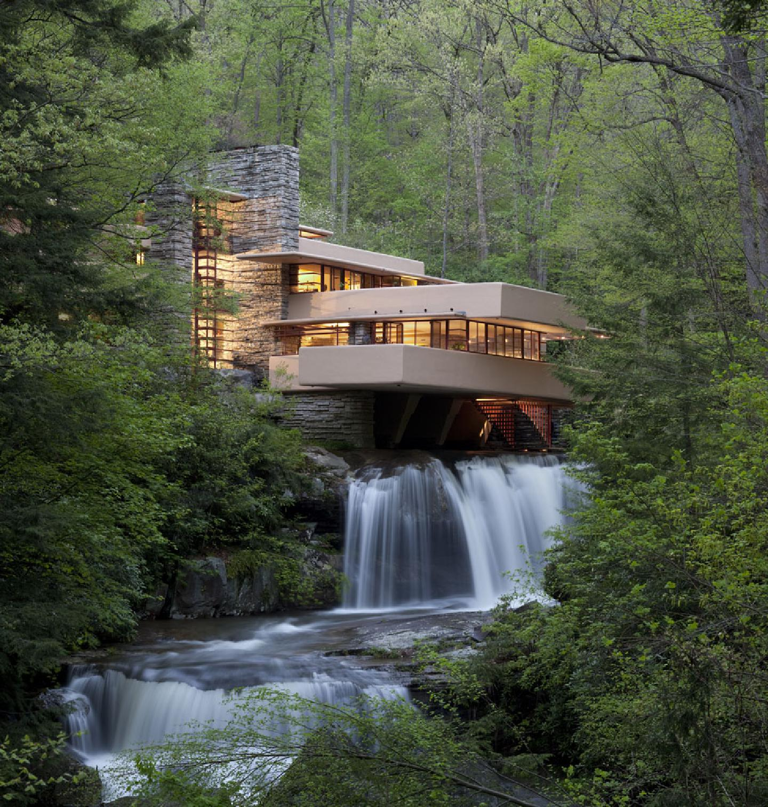
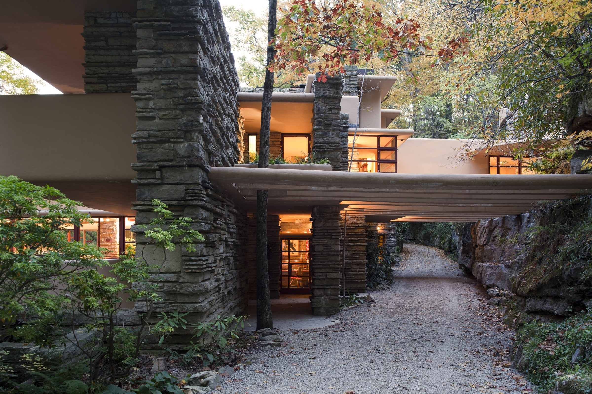
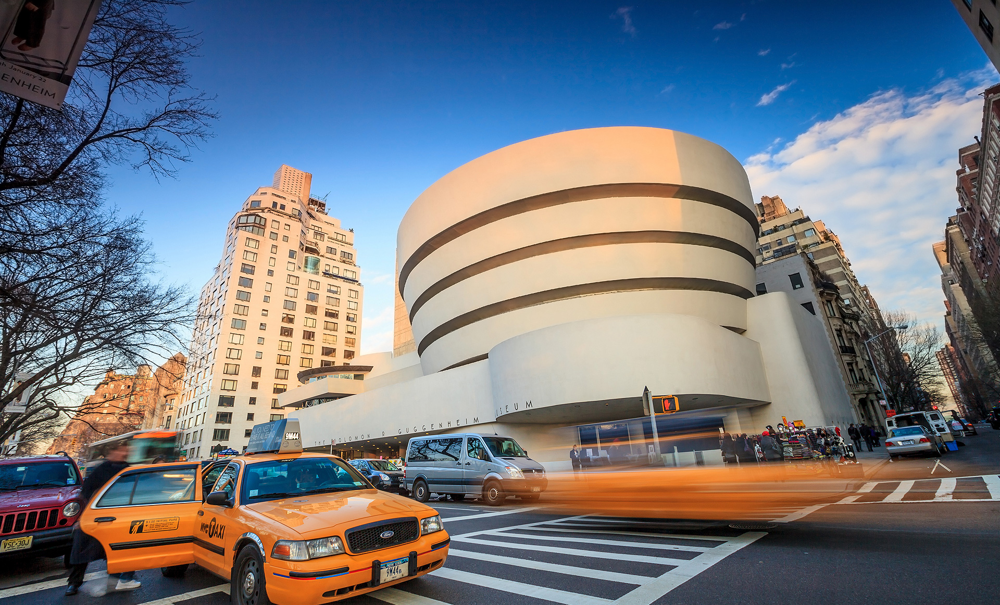
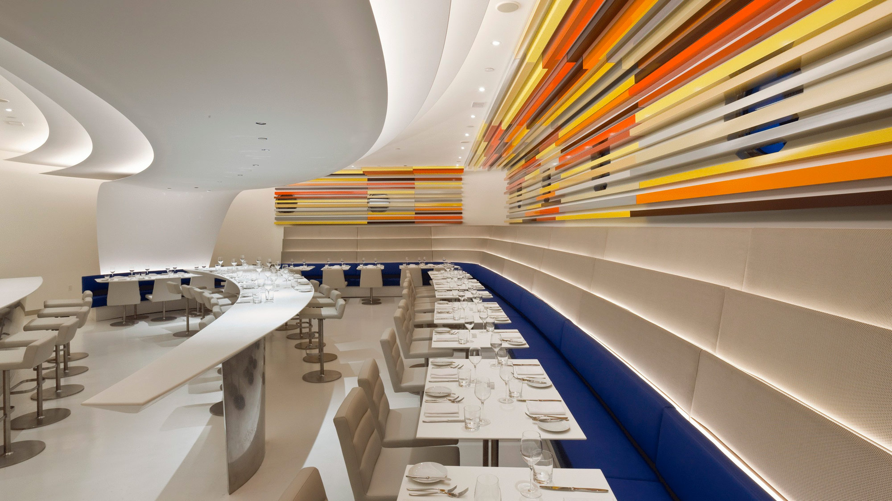

MAIN
THE EXPOSITION
work
all he's creation
contact
for every needs
in white
in black
Art direction
Digital production
Branding
10
06
20
25
exhibition
FRANCK
LLOYD WRIGHT
guggenheim
SCROOL TO EXPLORE
SUMMARY:
P02:Introduction
P03:Gallery
P04:Contact screen
P05:About screen
showcase the work of Frank Lloyd
Wright in a virtual museum
dedicated to his most iconic
designs. It offers a glimpse into his
unique architectural vision and
design. Explore his legacy and
discover the genius behind his
most famous works.

The
Gordon House

In 2001, the Gordon House was
saved from destruction and
moved to Silverton through an
agreement between the
Conservancy and the Oregon
Garden Foundation.

In January 2001, The Conservancy signed an
agreement with the Oregon Garden
Foundation to move the Gordon House a 40-
mile drive south to the Oregon Garden in
Silverton.
En 2000, le terrain a été vendu et les
nouveaux propriétaires ne voulaient
pas conserver la maison.
A Historic Move
to Preserve Frank
Lloyd Wright's Legacy
The Gordon House is
located in Silverton,
Oregon, next to the
Oregon Garden
Interior

The house was sited in an oak grove on The Garden
grounds
to match the Wilsonville site as closely as
possible. The house retains the true north compass
orientation to meet Frank Lloyd Wright's design
specifications for natural light and ventilation. The
painstaking reassembly of the Gordon House took nine
months. The view of the Willamette River has been
replaced with a serene rural vista, evocative of the
original farm setting.
The footings were built.
Constructed the foundational basement to house
heating, plumbing, and electrical systems.
THE
FALLINGWATER

In 1935, Fallingwater was
designed by Frank Lloyd Wright
and built over a waterfall
in rural Pennsylvania,
blending architecture with
its natural surroundings.

Fallingwater was constructed
between 1936 and 1939 as a
weekend home for the Kaufmann
family, owners of a Pittsburgh
department store.
La maison est aujourd’hui
un musée public, reconnue
comme un chef-d’œuvre
architectural du XXe siècle.
A Masterpiece in
Harmony with
Nature’s Beauty
Fallingwater is
located in Mill Run,
Pennsylvania, within the
Laurel Highlands
Interior
.webp)
Built directly over a waterfall, Fallingwater
integrates the sound and sight of water
into everyday living. Wright used native
stone, cantilevered terraces, and large
expanses of glass to bring the outside
world into the home’s interior spaces.
The house appears to grow from the
rock itself, preserving the unity between
architecture and landscape.
The stone hearth anchors the home.
Structural elements merge with the natural
surroundings to house modern amenities
The
Guggenheim

In 1959, the Guggenheim Museum
opened its doors in New York City,
showcasing modern art in an
architectural masterpiece
designed by Frank Lloyd Wright.
Completed shortly after Wright’s death,
the Guggenheim was the result of years
of collaboration between the architect
and art collector Solomon R. Guggenheim.
It remains a landmark of 20th-century design.
Construit sur la Cinquième Avenue,
le musée a transformé l'expérience
de la visite artistique avec sa rampe
hélicoïdale unique.
A Spiral Journey
through Art and
Architecture’s Innovation
The Guggenheim Museum is
located in New York City,
near Central Park on the
Upper East Side
Interior

The museum’s interior features a continuous
spiral ramp that gently ascends around a
central atrium, allowing visitors to experience
art in a fluid, uninterrupted motion. Natural
light floods the space through a glass dome,
reinforcing Wright’s belief in organic
architecture that harmonizes with its function.
The spiral ramp defines the space.
A unique structural design supports art
display and visitor movement in a way
never before seen in traditional museums.